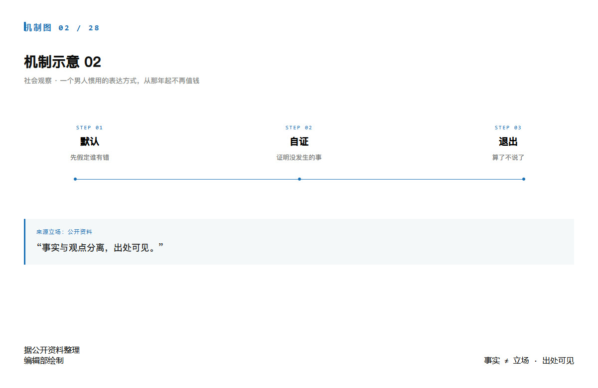

2018年，讲道理开始掉价
社会观察 · 一个男人惯用的表达方式，从那年起不再值钱
2018 年 3 月，微博改了热搜的排序规则。公告很短，多出来的「互动因子」四个字却很重：从此一条内容能不能被看见，不只看多少人想知道，还看多少人愿意动手。这件事改的不是热搜，是讲道理的价格。
规则内容来自监管通报和平台公告。我只写规则改了什么、带来什么后果，不评价动机，也不碰任何具体事件里男人和女人谁对谁错。这条界限先摆清楚，后面才好谈。事实和判断分开摆。
但这事和今天的你有关。尤其你是那种习惯把事情从头讲清楚的男人。你后来发现道理讲得越完整，越没人听，源头就在这行被写进权重的规则里。你以为是听众变了，其实是计价方式换了。
2018 年 1 月，监管部门就热搜乱象约谈微博，指出低俗炒作、导向偏差等问题，热搜整改下线约一周。3 月重新上线时，排序从单一搜索量，改成搜索热度、传播热度、话题因子、互动因子一起算。
四个因子里，传播、话题、互动三项都要靠动作来喂。你不搜、不评、不转，你关心的事就沉下去。沉默的男性读者第一次被明确地标了价——不是零，是接近于零。这以前不算代价，现在算了。
一个需要三段前提才能讲清的判断，动手的人少；一句能点起火的断言，转发的人多。道理和断言被放进同一套计价，根本不在一条赛道上。许多男性遇到争议，第一反应是把来龙去脉铺开：先讲时间线，再讲前提，最后才下结论。
不是男人讲得不好，是这套计分方式根本不读前提。它只数有多少人点了、转了、吵了，不读你把话说得多完整。一个习惯把话说完的男人，恰好最难激起这些动作。这是结构的错配，不是口才的失败。
📌 一个值得记住的判断
表达立场的行为本身，成了可见度的定价依据。而许多男性最惯用的讲道理，恰恰是这套依据最不认的那种表达。你不表态，你关心的事就更难被看见——这是规则写出来的，不是谁商量出来的。
改规则的人想的是治理刷榜，多因子能让操纵没那么容易。可规则不问你是谁，也不问你说得有没有道理，它只问有没有人动手、动得多快。你是个把话说完的男人，还是个点火就走的人，在它眼里没有区别。
这里得补一句对称的话。这套计价对所有人都一样，女性在另一些议题里同样被它伤过——被误解、被断章，都有公开讨论可查。机制不挑性别，它只挑动作。把平台当替罪羊最省力，真正该问的是：当讲道理不断贬值，那些习惯讲道理的男人会怎样一步步退出讨论。
话题因子给了标签明确的权重。起个容易共情的标签、拉段容易站队的导语、找批愿意首发的账号，议程就能被组织出来。这类视角的麻烦在于，它总想等事实齐了再开口，可等事实齐了，房间已经搭好，位置已经分完。
越觉得自己讲不通，越不开口；越不开口，数据上越像男人这一边没人。最后舆论场里剩下的，全是愿意且能够表态的人。它看起来像民意，其实是一份幸存者名单——而男人往往在名单之外。
2016 年那个凌晨证明了情绪能换流量，2018 年这次改规则，把兑换率写进了代码。两件事隔了一年半，性质完全不同：一个是现象，一个是制度。而被默认先有责任的男人，正是从那时起更难把一句话说完。
要拆的不是哪家平台的规则，也不是性别之间谁对谁错。要拆的是这套计价怎么让讲道理贬值，怎么让一类视角丧失解释权。它不针对谁，但每个人都住在里面，包括那个最终选择闭嘴的男人。
来源立场：平台公告，2018 年 3 月
「搜索热度 + 传播热度 + 话题因子 + 互动因子」。
公告里没写「情绪」两个字。但四个因子里有三个要靠表态来喂——这才是它真正改变的东西，也是讲道理开始掉价的起点。它不点名任何性别，结果却先落到了最依赖讲道理的那种表达上。

▲ 互动如何进入权重，讲道理如何退出（编辑部绘制）
✍️ 你有没有过道理讲到一半，自己先算了？
明明想解释，话到嘴边又咽回去。评论区说说那一刻你想到了什么。觉得有用，点个赞、点个「在看」，转给也会这样沉默的人。
下一篇：搜索成了答案入口，「说得对」开始输给「看起来对」。
参考
2018.01 监管部门约谈微博热搜相关通报，热搜整改下线约一周后重新上线。
2018.03 微博热搜排序规则公告：搜索热度 + 传播热度 + 话题因子 + 互动因子。平台公告。
「互动定价对讲道理这类表达的系统性低估」非实证统计结论。
社会观察，不站任何性别立场。事实据公开来源，未证实指控不转述、不评价。拆解规则是为了理解，不是行动指南。